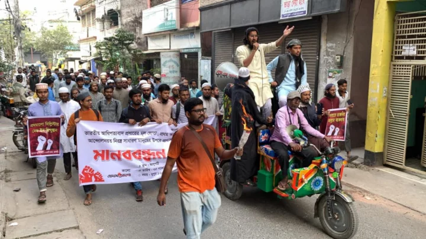
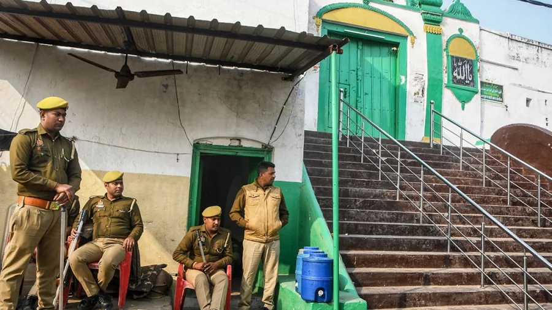
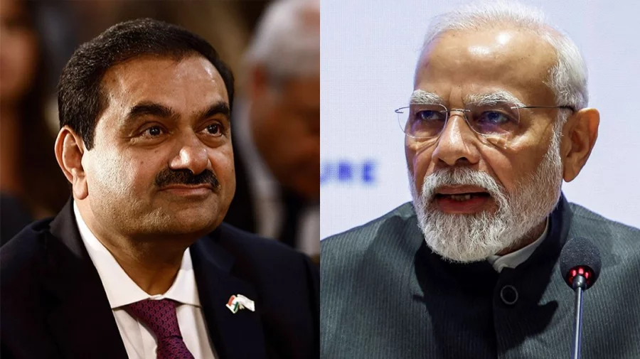
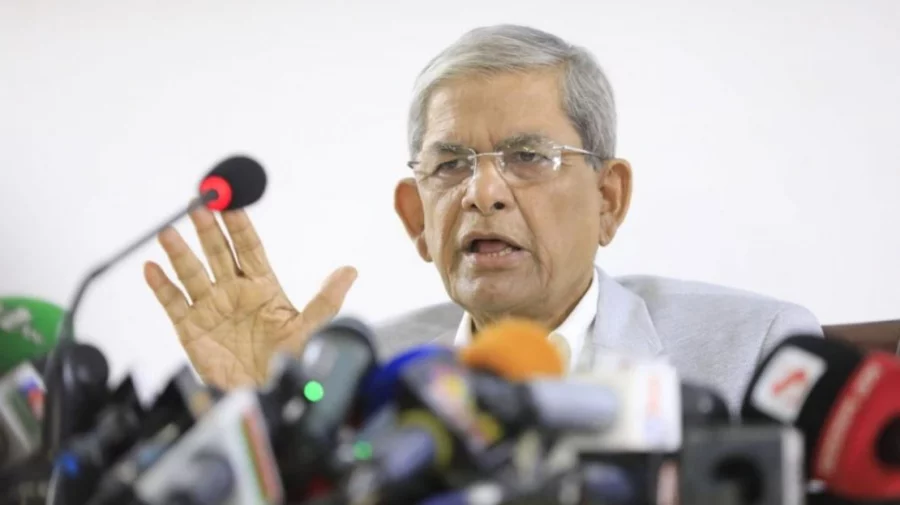

Top News |
|

Publish : 25 Nov 2024, 07:31 PM Prothom Alo Rajshahi office vandalized, signboard set on fireThe incident occurred on Monday in front of the office at Boalia Thana road.After breaking the signboard, the attackers took it down and set it alight. The attackers were seen celebrating after destroying the signboard. Read MoreAbul Kalam Azad, the Bureau Chief of Prothom Alo in Rajshahi, confirmed the incident, saying: "They attacked the office, destroyed the signboard, and set it on fire. They also chanted slogans against Prothom Alo and Daily Star. However, no journalists were harmed in the incident."Local sources reported that a protest march was organized by groups named “Alam-Olama” and “Tawhidi Jonota” against what they called “anti-national activities” of Prothom Alo and Daily Star, as well as the police’s unexpected attack on a “Ziafat” programme. The march started from Zero Point and reached Boalia Thana road, where the protesters staged a human chain in front of the Prothom Alo office. At one point, they attacked the office gate with sticks and threw bricks. Mehedi Masud, the Officer-in-Charge (OC) of Boalia Thana, confirmed that he was verbally informed about the incident and said: "If a written complaint is filed, legal action will be taken." Meanwhile, Shafiqul Alam, press secretary at Chief Adviser's Office, said: “I condemn with the strongest terms the attack on the Prothom Alo office at Rajshahi. If you have complaints against the journalism of Prothom Alo, the Daily Star, or any other media outlets, you can go to courts to seek legal redress. You can also hold peaceful protests. Protests against media outlets isn't new. It has been going on for centuries. But threats and intimidation of journalists or attacking media outlets will not be tolerated.” |

Publish : 25 Nov 2024, 08:43 PM Adviser Nahid: Vandalism and shutdown threats against media houses intolerableAdviser to the Ministry of Information and Broadcasting Nahid Islam said that the government does not support vandalism at newspaper offices or attempts to pressure their closure. He warned that any such incidents in the future would not be tolerated. Read MoreSpeaking at a press briefing organized by the Chief Adviser's Press Wing at the Foreign Service Academy in Dhaka on Monday evening, Nahid Islam emphasized this stance. Local Government Adviser Asif Mahmud Shojib Bhuiyan, Press Secretary to the Chief Advisor Shafiqul Alam, and Deputy Press Secretary Jahangir Alam Apurba were also present at the briefing. Addressing recent events, Nahid Islam said: "We have noticed rising tensions surrounding Prothom Alo in the past few days. Our position is clear: if any segment of the public has complaints or grievances against any media outlet or newspaper, they can express them, but it must be done peacefully." On Sunday, there were similar tensions outside their office, and today their Rajshahi office was vandalized. Protests were also held in Chittagong, Brahmanbaria, and other areas. Nahid further said: "We do not condone vandalism at newspaper offices or pressure to shut them down. Such incidents will not be tolerated in the future." The adviser announced that legal action would be taken against those involved in vandalism. "We urge everyone to express their grievances peacefully. People have the right to hold meetings and protests. If there are specific complaints, they should follow legal channels. We call on everyone to avoid participating in undesirable or anarchic activities that harm the country's image," he said. Nahid Islam also said that Monday was an eventful day. |
World News |
|

Publish : 25 Nov 2024, 07:50 PM 5 killed in Uttar Pradesh violence over mosque surveyChaos erupted in Uttar Pradesh when a court-ordered survey of the Mughal-era Shahi Jama Masjid triggered violent clashes between locals and police Internet services were suspended, and schools were closed on Monday in Uttar Pradesh's Sambhal district after violent clashes over a mosque survey left five people dead. Read MoreAuthorities confirmed the fatalities during confrontations between protesters and security personnel.The mob was protesting a court-ordered survey of a Mughal-era-mosque. It was initially reported on Sunday that three persons had died in the clashes. On Monday, Moradabad Divisional Commissioner Aunjaneya Kumar Singh said the police had officially registered four deaths in connection with the violence. However, the family of a fifth person who died in the clashes had not sent the body for autopsy or lodged a complaint with the police, The Times of India quoted Singh as saying. A first information report (FIR) has been filed against Samajwadi Party MP Zia-ur-Rahman Barq and the son of an MLA from the party, according to the newspaper. The incident took place on Sunday after hundreds of protestors gathered at the Shahi Jama Masjid in the district’s Chandausi town to oppose the survey, which was being conducted to investigate claims that a Hindu temple had existed at the site before the mosque was built in 1526. Members of the mob threw stones at surveyors, who were accompanied by police personnel. The police fired tear gas shells to force the crowd to disperse. Following the clashes on Sunday, Singh said that three persons – identified as Naeem, Bilal and Nauman – were killed. All three sustained bullet injuries during the clashes, Singh told The Indian Express. On Monday, Singh said that the condition of another person who was injured during the clashes and a police officer was critical, The Times of India reported. The police were in the process of registering FIRs against the protestors, he said. “The accused are identified using visuals captured by the drone cameras,” Singh said. “We have recovered videos in which a few masked men amongst the rioters were pelting stones.” Among those against whom FIRs were filed included Barq and Sohail Iqbal, the son of party MLA Iqbal Mehmood, The Times of India quoted unidentified police officers as saying. In the chaos, about 20 police personnel were also injured. At least 21 persons, including two women, were also arrested in connection with the clashes, the police officers added. On Sunday, the administration in Sambhal prohibited outsiders, social organizations and public representatives from entering the district without prior approval. The collection of stones, soda bottles or any flammable or explosive materials on rooftops was also prohibited. Due to the precarious law and order situation, the authorities also ordered the suspension of internet services in Sambhal for 24 hours. Schools and colleges were closed on Monday for students up to Class 12. |
|
Publish : 29 Sep 2024, 04:24 PM Shooting leaves 17 dead in South AfricaSouth African media said the mass shootings occurred on Friday night in the town of Lusikisiki South African police said Saturday they were launching a manhunt after 17 people were shot dead in a town in the east of the country. Read More"In one house, 13 people were killed -- 12 women and one man. In another, four people were killed. An 18th victim is in critical condition in a hospital," the police said in a statement. South African media said the mass shootings occurred on Friday night in the town of Lusikisiki in the Eastern Cape province about 200 kilometres southwest of Durban. "We do not know the motive" and "we do not know if there is one or several suspects on the run," national police chief Fannie Masemola said on SABC public television. In mid-September, seven members of a family, including three children, were shot dead at their home in KwaZulu-Natal, also in the east of the country. The killers in that affair have not been caught. |
Sports |
|
Publish : 26 Nov 2024, 01:09 AM WI on verge of win after Taskin’s maiden 6-wicket haulChasing 334 for victory, Bangladesh will go into Tuesday's final day still 225 runs short and with just 3 wickets in hand Fast bowlers Kemar Roach and Jayden Seales took the West Indies to the brink of victory in the first Test in Antigua Monday, taking three wickets each to reduce Bangladesh to 109/7 in their second innings when bad light put an end to the fourth day. Read MoreChasing 334 to win the match, Bangladesh will go into Tuesday's final day still 225 runs short of victory and with just three wickets in hand. After bowling the home side out for 152 in their second innings, Bangladesh made the worst possible start to the chase when Roach bowled opener Zakir Hasan off an inside edge with the fifth ball of the innings. Fellow opener Mahmudul Hasan Joy then edged Seales to Justin Greaves at third slip before Roach snapped Shahadat Hossain and Mominul Haque in quick succession to leave Bangladesh reeling at 23/4.Liton Das led a mini-recovery but when he fell to Shamar Joseph, who saw four catches go down off his bowling, for 22, the visitors were in deep trouble at 59/5. Captain Mehedi Hasan Miraz went on the counter-attack with a 46-ball 45 before edging Seales to Joshua Da Silva behind the stumps. In his next over, Seales bowled Taijul Islam to end the day with 3/31. Roach had 3/20. Earlier, Bangladesh threw an early surprise by declaring the first innings on their overnight total of 269/9, even though they still trailed by 181 runs. The West Indies responded by going after quick runs to build on their lead. It did not go quite according to plan as they were skittled for 152, Alick Athanaze top-scoring with 42. Bangladesh bowlers, led by right-arm pacer Taskin Ahmed, initiated breakthroughs at regular intervals with the home side going into the lunch break on 61 losing three wickets.They then lost their remaining seven wickets in the post-lunch session for the addition of 91 runs. Opening bowler Taskin was the man to profit, his 6/64 giving him a first-ever five-wicket haul in Test cricket. The 29-year old, playing in his 16th Test, finished with eight wickets in the game after claiming two in the first innings. Asked to bat first, the Caribbean side earlier posted 450 for nine declared. |
|
Publish : 23 Nov 2024, 09:05 PM Putin vows more tests of nuke-capable missile fired at UkraineRussian President Vladimir Putin on Friday promised more combat test-firing of an experimental hypersonic missile launched at Ukraine, as Volodymyr Zelensky appealed for updated air-defence systems to meet the new threat. Read MoreThe latest statements from the leaders came hours after Ukraine’s parliament shut down over heightened fears of a missile attack. A day after Moscow fired the new missile at the Ukrainian city of Dnipro, Putin said there would be more tests of the new Oreshnik missile. “We will continue these tests, including in combat conditions, depending on the situation and character of the security threats posted to Russia,” Putin said in a televised meeting with military chiefs. Russia would also begin serial production of the experimental weapon, he added. Ukraine’s President Volodymyr Zelensky said Friday it was already looking for updated air-defence systems from its allies in response to the new threat. Earlier Friday, China’s foreign ministry had repeated its call for “calm” and “restraint” in the war after Russia confirmed it had fired the ballistic missile. In his video address however, Zelensky said: “From Russia, this is a mockery of the position of states such as China, states of the Global South, some leaders who call for restraint every time.” The introduction of the new weapon into the battlefield has further raised tensions in the nearly three-year-long war, and comes as Kyiv’s forces are struggling on the ground. On Friday, Russia claimed the capture of another village in eastern Ukraine. Putin’s hints Thursday of strikes on Western countries raised fears of the war spilling over into a global conflict. |
Global Diplomacy |
|
Publish : 28 Sep 2024, 09:30 AM Gaza war resonates but has global diplomacy shifted one year on?A year after the October 7 attack that sparked war in Gaza, diplomacy has failed to produce a ceasefire and the world watches on as the death toll mounts. Read MoreFears of war engulfing the wider region have soared as exchanges of fire have escalated between Israel and Lebanese group Hezbollah. Over the past year, South Africa has taken Israel to court and some European governments have drawn Israeli anger by recognizing the State of Palestine, but analysts say only a radical change in US policy can stop the conflict. Since October 7, Israel's military offensive in Gaza has killed over 41,000 Palestinians, a majority of them civilians, according to the health ministry in the Hamas-run territory.To the north, Israeli air strikes killed at least 569 people in Lebanon on Monday in the country's deadliest day of violence since the 1975-1990 civil war, the health ministry said. Around the world, the conflict has had a polarizing effect, generating passionate support for both sides. "This war has considerably deepened fracture lines," said analyst Karim Bitar. For many people, especially in countries which experienced colonial rule, the West's perceived failure to defend the human rights of Palestinians had exposed its "hypocrisy," he said. In the Arab world, "there is this idea that all great principles fly out the window when it comes to Israel and that the West remains consumed by guilt" from World War II and the Holocaust. Palestinian historian and diplomat Elias Sanbar said that the West had given the Israelis a "carte-blanche of impunity" for decades, ever since the creation of Israel in 1948. But today "it will be much harder to show unconditional support to Israel," he said. |
|

Publish : 19 Sep 2024, 03:01 PM Modi leads, Adani follows: Is India’s diplomacy in lockstep with a private group’s global expansion?Protests over the Adani Group’s proposed takeover of Nairobi airport have renewed attention on the conglomerate’s global plans The Kenyan high court last week suspended a proposed deal that would have given the Adani Group rights to run the Nairobi airport for 30 years – its first airport venture outside India. The court order is a setback to the group’s plans to expand its global footprint. Read MoreNotably, this expansion has closely followed in the footsteps of Indian Prime Minister Narendra Modi’s diplomatic engagements. Most Adani projects outside India, whether in the neighbourhood or further afield, were announced within months of Modi visiting the country or meeting its head of state, Scroll’s analysis shows. The Kenyan prime minister, for instance, visited New Delhi in December 2023. Three months later, in March, the Adani Group submitted a proposal to upgrade and expand the Nairobi airport. In June, the Kenyan authorities changed the national aviation policy and approved an airport investment plan. After whistleblower documents brought this to light, the Kenyan Human Rights Commission and the bar association filed a legal challenge, arguing that “leasing a strategic and profitable national airport to a private entity is irrational”, more so because it was being done in secrecy, without any competitive bidding. The High Court temporarily halted the proposed deal on September 9. As questions were raised in the Kenyan Parliament and criticism mounted on social media, a government advisor said no contract had been awarded to Adani for the airport but the group has been granted concessions worth $1.3 billion to construct high-voltage power lines in Kenya. |
Bussiness |
|
Publish : 28 Oct 2024, 06:37 PM GDP growth down to 3.91% in the last quarter of FY24GDP growth in the first three quarters of FY24 stood at 6.04%, 4.78% and 5.42% respectively Bangladesh's gross domestic product (GDP) growth slowed to 3.91% on a point-to-point basis at a fixed price value in the fourth quarter of FY24, compared to 6.88% in the same period in FY23. Read MoreAccording to data from the Bangladesh Bureau of Statistics (BBS) released on Monday, GDP growth in the first three quarters of FY24 stood at 6.04%, 4.78% and 5.42% respectively, which was 6.25%, 7.05% and 3.02% in FY23 respectively. Besides, the services sector grew at 3.67% in the fourth quarter in FY24, compared to 4.82% in FY23. The April-June quarter marked the lowest expansion of overall economic output in FY24 in Bangladesh, which continues to face the most alarming economic crisis in recent decades amid high inflation and dwindling forex reserves. The World Bank in its October issue of Bangladesh Development Update said the real GDP growth of Bangladesh is estimated to have slowed to 5.2% in FY24 from 5.8% in FY23. The multilateral lender also slashed its forecast for Bangladesh's economic growth by 1.7 percentage points to 4% for FY25 due to significant uncertainties following recent political turmoil and data unavailability. The International Monetary Fund last week also brought down Bangladesh's economic growth forecast for this year to 4.5% as political uncertainty, industrial unrest and floods weigh heavily on economic activities. The FY25 growth prediction so far would be lowest since FY20, when the world was hit by the Covid-19 pandemic. In the same fiscal, the GDP growth was 3.45%, according to BBS. |
|
Publish : 25 Nov 2024, 03:43 PM Meghna Bank holds strategic business meetingThe meeting was presided over by Kazi Ahsan Khalil, managing director and CEO of Meghna Bank PLC Meghna Bank PLC's Strategic Business Meeting, 2024 was held at Aronnobash Resort, Pubail, Gazipur recently. The meeting was presided over by Kazi Ahsan Khalil, managing director and CEO of Meghna Bank PLC. Read MoreAmong others, Kimiwa Saddat, deputy managing director, and Sadequr Rahman, deputy managing director of Meghna Bank PLC, were also present at the event. Fifty four branch managers of Meghna Bank PLC and 20 sub-branch managers across the country along with senior officials from the head office participated in this day-long conference. Discussions focused on the bank's business growth, achievements, and strategic business plans for the upcoming year. |
Politics |
|

Publish : 23 Nov 2024, 09:44 AM Fakhrul: Sustainable reforms take timeHe accused the Awami League of undermining democracy and economic stability BNP Secretary General Mirza Fakhrul Islam Alamgir on Friday said that sustainable reforms cannot be achieved overnight, urging patience as the country navigates a transitional phase. Read MoreSpeaking at a civic discussion program titled “Long Anti-Fascist Movement: Today's Perspective” at the Jessore District Council auditorium, Fakhrul accused the Awami League of undermining democracy and economic stability. “The caretaker government system, introduced by Begum Khaleda Zia, was abolished by Sheikh Hasina, pushing the country towards instability,” he said. He said that the ruling party has left banks empty and suppressed dissent by shutting down media outlets like Diganta Television while controlling others through restrictive laws. Fakhrul said: “The reforms being talked about now are among the 31 points of BNP. These 31 points have been prepared by sitting with 42 political parties. Unity is needed to build this country with democratic and human values.” “BNP wants to form a government of consensus with all the oppressed parties, so that the country can move forward towards prosperity,” he said. He said: “As soon as the elections are held in the country, stability will come. If BNP comes to power, it will take the reform process forward from where this government completes it.” Referring to past movements, Fakhrul said that blood has a lot of power and change comes through sacrifices as history shows, from Shaheed Asad to Dr Milon and Abu Sayeed adding: “The students and the public have freed the country from tyranny by pouring their fresh blood. For this reason, they must always be remembered.” The event, chaired by district BNP Convener Nargis Begum, featured speeches by BNP Vice Chairman Advocate Nitai Roy Chowdhury and Khulna Divisional Organizing Secretary Anindya Islam Amit. |

Publish : 25 Nov 2024, 06:09 PM Tarique: BNP has no discord with interim govt over reforms'BNP has no discord with the interim government over reform program' Bangladesh Nationalist Party (BNP) Acting Chairman Tarique Rahman on Monday said those who are making evil efforts to mislead the people by raising question whether election is needed first or reform, they have different purposes. Read More"BNP has no discord with the interim government over reform programme. Those, who are making ill efforts to mislead the people by raising question whether election is needed first or reform, have different purposes," he said. Tarique Rahman was addressing virtually the annual general meeting of Dhaka Union of Journalists (DUJ) held at Jatiya Press Club here with DUJ President DUJ President Md Shahidul Islam. He said BNP was first to place a 27-point state reform proposals in 2022 and later it announced 31-point proposals after holding talks with other democratic political parties. BNP's 31-point proposals included formation of a media commission comprising retired judge of the Supreme Court and experienced journalists."The interim government has formed a media reform commission. So, BNP has no disagreement with the interim government over the reform program," he said. Tarique Rahman said BNP believes that reform is an ongoing process and it is not a matter to end. If anyone initiates a reform, another one takes the process ahead, he added. Without qualitative improvement of democratic political culture, reform cannot be effective, he said. Tarique Rahman said if people's hassle of everyday life is not removed, the cherished outcome of reforms cannot be achieved. The BNP acting chairman demanded a free, fair and neutral election within a logical time side by side with reforms. He said it is a reality that the mass uprising happened not only for an election. On the other hand, there is another cruel reality that the previous Awami League regime was able to establish fascism by forming a government repeatedly without holding elections to deprive people from their political and other rights. |
News Related Some Video |
Submit Your News |